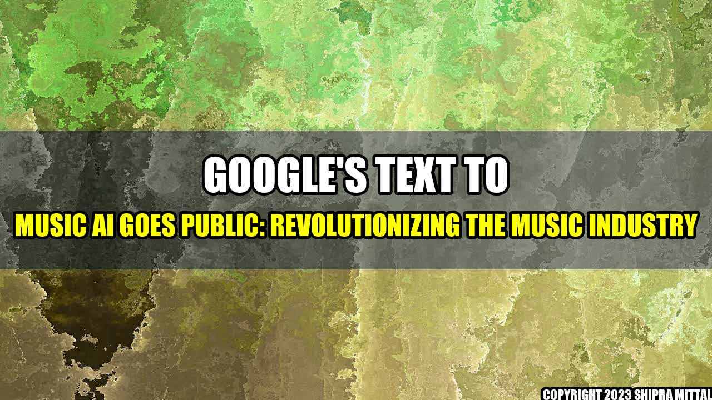

The Power of Google's Text to Music AI: Breakthrough Innovation
Every musician has a unique story on how they were inspired to take up their profession. For Emma, it all started with the sound of birds chirping outside her window. As a child, she would mimic the melodies she would hear from the birds and soon she started to experiment with different instruments to create her own compositions. Nowadays, she uses technology to enhance her creative process, and with the advent of Google's text to music AI, the possibilities for composing have become endless.

The Next Big Thing in Music?
Google's text to music AI is a game-changing technology that allows users to generate musical compositions from any text. Using machine learning algorithms, the technology analyzes the text and creates music that is tailored to the sentiment and context of the text. This is a major breakthrough for the music industry, as it creates endless possibilities for music creation and enhances the creative process for musicians.
Since its launch, Google's text to music AI has seen a growing interest from musicians and music producers. In fact, it has already been used to create soundtracks for movies and TV shows, as well as for artist collaborations. This is because the technology is incredibly versatile and can create music in any genre, from classical to modern, and even experimental.
Revolutionizing the Industry
One of the key benefits of Google's text to music AI is that it can help musicians cut down on the time it takes to compose a piece of music. Traditionally, it can take weeks or even months to create a single track, but with the help of AI, musicians can generate music in a matter of hours. This not only saves time but also increases productivity and efficiency.
Another advantage of this technology is that it allows for greater creative expression. Musicians can experiment with different texts and tweak the AI-generated music until it fits their vision perfectly. This encourages musical exploration and allows for more diverse and innovative compositions.
Google's text to music AI is still in its early stages, but it has already shown promising results. Here are some examples of how it has been used so far:
- Disney recently used the technology to create music for its new animated short film "Dinosaur Barbarian".
- Music producer Taryn Southern used the AI to create her album "I AM AI".
- Musician and YouTuber Andrew Huang used the technology to create a song with the help of his fans. He asked them to submit their own texts, and then used the AI to transform them into music.
The Future of Music
Google's text to music AI is still in its early stages, but it has the potential to revolutionize the way we create and consume music. As the technology becomes more refined, we can expect to see even more exciting applications in the music industry.
However, it's important to note that while AI can be a powerful tool, it will never replace the human element in music creation. Technology can enhance our creative process, but it can't replace the emotion and passion that comes from a human composer or performer.
Conclusion
- Google's text to music AI is a groundbreaking technology that allows users to generate music from any text.
- It has the potential to revolutionize the music industry, by allowing musicians to compose music in a matter of hours and encouraging greater creative expression.
- While AI can enhance our creative process, it will never replace the human element in music creation.
Overall, Google's text to music AI is an exciting development for the music industry, and we can expect to see many more innovative applications in the future.
Akash Mittal Tech Article
Share on Twitter Share on LinkedIn